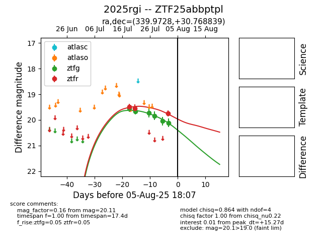

Target 2025rgi at 2025-08-05 18:07, see:
FINK: fink-portal.org/2025rgi
Lasair: lasair-ztf.lsst.ac.uk/objects/2025rgi
ALeRCE: alerce.online/object/2025rgi
TNS: wis-tns.org/object/2025rgi
YSE: ziggy.ucolick.org/yse/transient_detail/2025rgi
alt names
ZTF25abbptpl (ztf,fink)
2025rgi (tns,yse)
coordinates:
equatorial (ra, dec) = (339.9728,+30.76884)
galactic (l, b) = (92.1855,-24.13536)
photometry
last ztfg=20.11, ztfr=19.75
6 ztfg, 3 ztfr detections
